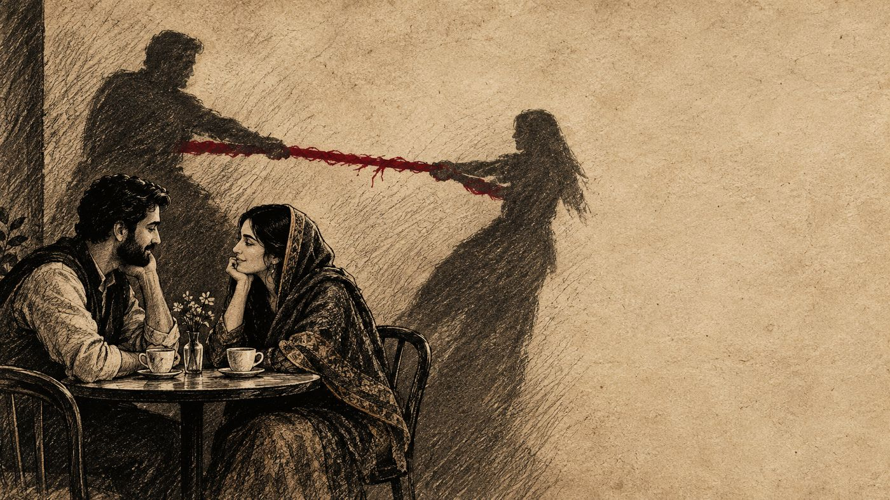

وہ حساب جو ہم محبت میں رکھتے ہیں

کہا جاتا ہے کہ محبت میں حساب کتاب نہیں ہوتا۔ یہ جملہ اتنا خوبصورت ہے کہ ہم اسے بار بار دہراتے ہیں۔ ہم اسے شادی کی تقریروں میں بولتے ہیں، دوستی کی قسم میں شامل کرتے ہیں، اور اسے ایک اعلیٰ اخلاقی معیار سمجھتے ہیں۔ مگر حقیقت اس کے بالکل برعکس ہے۔
انسان کی ذہنی ساخت ایسی ہے کہ وہ مسلسل گن رہا ہوتا ہے۔ ہم میں سے کوئی بھی، چاہے وہ کتنا ہی سیدھا سادہ کیوں نہ ہو، اپنے رشتوں میں ایک غیر مرئی بہی کھاتہ (ledger) رکھتا ہے۔ یہ حساب روپے پیسے کا نہیں ہوتا۔ یہ کالز کا حساب ہے، کوششوں کا حساب ہے، معافیوں کا حساب ہے، اور سب سے بڑھ کر، جذباتی مشقت (emotional labor) کا حساب ہے۔
ہم یہ نہیں بھولتے کہ پچھلی بار کس نے پہلے فون کیا تھا۔ ہمیں یاد رہتا ہے کہ سالگرہ پر کس نے کتنی محنت کی اور کس نے صرف ایک فارورڈ شدہ پیغام بھیج کر کام چلا لیا۔ ہم گن رہے ہوتے ہیں کہ کس نے کتنی بار غصہ پی لیا، اور کس نے کتنی بار اپنی بات منوائی۔
حساب کا بوجھ
اصل مسئلہ حساب رکھنے کا نہیں ہے۔ اصل مسئلہ یہ ہے کہ ہم اس حساب کو تسلیم کرنے سے انکار کر دیتے ہیں۔ ہم خود کو مارنے لگتے ہیں کہ ہم "چھوٹے" ہیں، کیونکہ ہم ایک طویل عرصے سے یہ مانتے آئے ہیں کہ سچی محبت میں توقعات نہیں ہونی چاہئیں۔
نتیجہ یہ نکلتا ہے کہ ہم یہ سب محسوس تو کرتے ہیں، مگر اسے لفظوں میں بیان نہیں کرتے۔ اس دبے ہوئے حساب کا سب سے عام مظاہرہ وہ لمحہ ہوتا ہے جب رشتہ ایک دھچکے سے گزرتا ہے۔ پھر وہ تمام پرانی پرچیاں میز پر آ جاتی ہیں۔ تب ہم کہتے ہیں: "میں ہمیشہ پہل کرتا ہوں،" یا "میں نے تمہارے لیے اپنی کتنی خواہشات قربان کیں۔"
یہ جملے سننے میں بہت تلخ لگتے ہیں، اور سامنے والا فوراً دفاعی انداز میں آ جاتا ہے۔ اسے لگتا ہے کہ اس سے کوئی بدلے کا مطالبہ کر رہا ہے۔ لیکن اگر ہم دھیان سے دیکھیں تو یہ جملے کسی مطالبے کے نہیں، بلکہ ایک تھکاوٹ کے ہوتے ہیں۔ یہ اس بات کی شکایت نہیں کہ "تم نے کیا نہیں کیا"، بلکہ اس بات کا دکھ ہے کہ "میری کوششوں کو دیکھا نہیں گیا۔"
انسانی فطرت اور نفسیاتی انصاف
نفسیات میں اس پر بہت کام ہوا ہے۔ ماہرین اسے Equity Theory یا انصاف کا نظریہ کہتے ہیں۔ اس کا سیدھا مطلب یہ ہے کہ رشتوں میں انسان ہمیشہ 50-50 کا حساب نہیں مانگتا۔ کبھی ایک شخص زیادہ دے رہا ہوتا ہے، کبھی دوسرا۔ لیکن طویل عرصے میں انسان کے اندر ایک توازن کی ضرورت ہوتی ہے۔
اگر کسی ایک فریق کو ہمیشہ دینے والا ہی بننا پڑے، اور دوسرے کو ہمیشہ لینے والا، تو رشتہ ٹوٹتا نہیں۔ وہ زنگ آلود ہو جاتا ہے۔ دینے والا خاموشی سے کڑھتا رہتا ہے، اور لینے والا سمجھتا رہتا ہے کہ سب ٹھیک ہے۔ یہ خاموشی کسی دن بہت بڑی آواز بن کر پھٹتی ہے۔
اس کا سامنا کرنا مشکل ہے کیونکہ ہم اپنے رشتوں کو کسی کاروبار کی طرح نہیں دیکھنا چاہتے۔ ہم نہیں چاہتے کہ ہماری محبت کا شمار کسی دفتر کے کھاتے میں ہو۔ مگر حقیقت یہ ہے کہ ہم انسان ہیں، اور انسان وہ واحد مخلوق ہے جو رشتوں میں انصاف کا تصور رکھتی ہے۔
"میں نے کیا کیا" کے پیچھے
اس خفیہ حساب کا سب سے خطرناک روپ وہ ہوتا ہے جب کوئی شخص اپنے کیے کا بدلہ مانگنے لگتا ہے۔ "میں نے تمہاری پڑھائی کے لیے کیا کیا،" یا "میں نے تمہاری خاطر اپنا کیریئر کیوں چھوڑا؟"
ایسے جملے صرف اس وقت بولے جاتے ہیں جب دینے والا محسوس کرتا ہے کہ اس کی قربانی کو قدر کی نگاہ سے نہیں دیکھا گیا۔ یہ جملے سننے والے کے لیے ایک جال بن جاتے ہیں۔ اب وہ کچھ بھی کرے، وہ اس قرض کو نہیں اتار سکتا۔ رشتہ محبت سے نکل کر ایک ایسے معاہدے میں تبدیل ہو جاتا ہے جس کی شرائط کبھی لکھی نہیں گئی تھیں۔
یہاں ایک اہم بات سمجھنی ضروری ہے۔ ہمارا مسئلہ "حساب رکھنا" نہیں ہے۔ ہمارا مسئلہ "حساب چھپانا" ہے۔ ہم اس لیے تکلیف میں مبتلا ہوتے ہیں کہ ہم ایک طرف تو گن رہے ہوتے ہیں، اور دوسری طرف خود کو یہ باور کرا رہے ہوتے ہیں کہ ہمیں کوئی فرق نہیں پڑتا۔ یہ دوہرا پن ہمیں اندر سے کھوکھلا کر دیتا ہے۔
حساب کو کھلا کرنا
اگر ہم اس خفیہ بہی کھاتے کو قبول کر لیں تو رشتے بہتر ہو سکتے ہیں۔ اس کا مطلب یہ نہیں کہ ہم ہر کام کا بل مانگیں۔ اس کا مطلب یہ ہے کہ ہم اپنی توقعات کا کھلے عام اظہار کریں۔
اگر آپ کو لگتا ہے کہ آپ ہمیشہ پہل کرتے ہیں، تو اس کا مطلب یہ نہیں کہ آپ کو پہل کرنا چھوڑ دینا چاہیے، یا یہ شکایت کرنی چاہیے کہ "تم کبھی نہیں کرتے"۔ اس کا مطلب یہ ہے کہ آپ کو یہ کہنا چاہیے کہ "مجھے اچھا لگتا ہے جب آپ بھی کبھی پہل کرتے ہیں۔"
دوسری طرف، اگر آپ کو لگتا ہے کہ آپ کے لیے ہمیشہ سب کچھ کیا جاتا ہے، تو یہ سمجھنے کی ضرورت ہے کہ سامنے والا شخص بھی تھک سکتا ہے۔ کوئی بھی شخص، چاہے وہ کتنی ہی محبت کیوں نہ کرتا ہو، ہمیشہ ایک طرفہ محنت کر کے خوش نہیں رہ سکتا۔
رشتوں میں سب سے زیادہ خوبصورت چیز یہ نہیں ہوتی کہ کوئی حساب نہیں رکھتا۔ سب سے خوبصورت چیز یہ ہوتی ہے کہ دونوں لوگ جانتے ہیں کہ حساب کیا ہے، مگر وہ اس حساب کو ایک دوسرے کے چہرے پر مارنے کے لیے نہیں نکالتے۔
وہ حساب کو ایک طرف رکھ کر پہلے یہ سوچتے ہیں کہ دوسرے کی تھکاوٹ کی وجہ کیا ہے۔
کچھ نہ کہنے کا نقصان
وہ لوگ جو سب سے زیادہ خاموش رہتے ہیں، وہ سب سے زیادہ حساب رکھتے ہیں۔ یہ کوئی تضاد نہیں ہے۔ خاموشی دراصل پرانی پرچیوں کا ایک بوجھل ڈھیر ہوتی ہے۔
اگر آپ کسی رشتے میں خود کو مسلسل نادیدہ (invisible) محسوس کر رہے ہیں، تو وہ حساب آپ کے اندر زہر بن رہا ہے۔ اسے وہیں نہ رکھیں۔ نہ تو اسے کسی جھگڑے کا موضوع بنائیں، اور نہ ہی اسے دبا کر اپنے اندر لیٹنے دیں۔ بس ایک سیدھی سی بات کریں۔
رشتہ وہ نہیں ہوتا جس میں دونوں ایک دوسرے کے لیے برابر کے شریک ہوں۔ رشتہ وہ ہوتا ہے جس میں دونوں کو یہ معلوم ہو کہ کون کب تھکا ہوا ہے، اور کون کب دوسرے کے لیے بغیر حساب کے کھڑا ہو سکتا ہے۔
اس لیے "محبت میں حساب نہیں ہوتا" والا جملہ ہمیشہ کے لیے بھلا دیں۔ یہ قبول کر لیں کہ حساب چلتا ہے۔ بس اس حساب کو ایک دوسرے کو تھکا دینے کا ہتھیار نہ بننے دیں۔